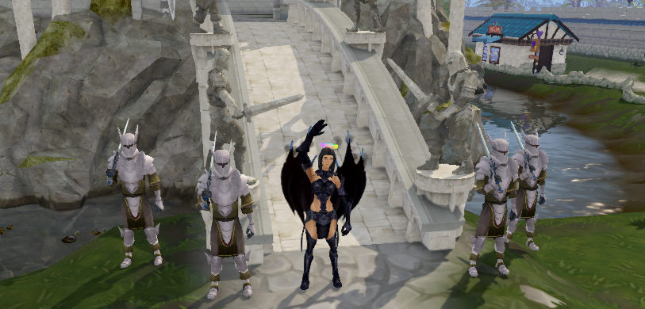

About Me
Hey, Thanks for checking my profile out!
I am currently a student at Hunter College majoring in Computer Science and will be graduating before year's end. I have had the opportunity of working as a QA Analyst and QA intern for two influential companies. Although my professional experience limits me as a QA Analyst, I do code when spirits are high. My programming language of choice is C++, but I suppose a little Python and Java don't hurt nobody either. I have a couple simple projects for viewing on my GitHub.
As a student, I have had the opportunity to do a lot of programming with school projects as well as personal and team practice coding. Recognizing how diverse this field is, I wasn't satisfied with just knowing the basics of what a developer did. So I branched out from software engineering and decided to partake in an internship as a QA Analyst which landed me another internship and eventually a full time postion as a Junior QA Analyst.
I've learned a substantial amount at both Reval and Hearst Digital Media and I'm grateful for both opportunities. I am now open to any new learning opportunities. I would particularly look foward to a role the helps me work and learn automation.
You can review my complete resume here
Experience

Education
Hunter College - Computer Science, BA - 2019
Professional Experience
HEARST Digital Media
| Junior QA Analyst |
Dec 2017 – Jan 2019 |
| QA Analyst Intern |
Sep 2017 – Dec 2017 |
REVAL
| QA Analyst Intern |
Jun 2016 – Sep 2016 |
Projects
I have worked on a website with a team that applies filters on images and allows users to save it. My role required me to devise website designs and relay it to the team as well as design and implement the filter code which was done in Python. I created 15 filters using PIL modules as well as self-created algorithms to modify images. This project strengthened my collaborative skills and technology based communication and organization. We used Trello to organize tasks, task status, due dates, and provide resource links for those tasks. For retrospectives, we used IdeaBoardz as a way to reflect on progress that had been made thus far. The project also exposed me to frameworks such as Flask and Django, PIL (Python Imaging Library) and MatLab to manipulate images, as well as tools like CircleCI for continuous integration. HTML, CSS, and Javascript were used to design, style, and program behavior. We used SQLite for storing images in a gallery for users to access after login. AJAX was also used to parse requests and data for a more stable webpage. We used Chrome developer tools and pytest to test aspects of the website. This project was done for a class that focused on Agile web development and methodologies.
Technical skills
| Languages |
Operating systems |
Databases |
Frameworks |
Tools |
- C++
- C
- Java
- Python
- Javascript
- HTML
- CSS
|
|
|
|
- JIRA
- GIT
- Slack
- Trello
- Terminal
- Virtual Box
|
Languages
- English
- Punjabi
- Hindi
- Urdu
- Japanese
- Spanish
Hobbies of this Hobbit

- RuneScape - I'm a veteran there. Somewhere past the 10 year mark. Say HI! If you see Jade Zero (me) strolling around :)
- Other Games - ONE is simply never enough. I'm game for anything between Call of Duty to Virtual Villagers :'D
- Anime - I'm one of the many who upgraded from watching cartoons. Anime was one of my motivations to learn Japanese. Believe me, it was worth it and super fun!
- Staying Current - Keeping up with new technologies and looking up ways to do things the simpler way.
- Yoga, biking, eating, running... you know, the works.
- Bowling - I really suck at this game, tremendously, but love it nonetheless. One day I will make it to second place. I know it.
- Traveling - Nothing gives me more pleasure than admiring all the magnificent places our planet has to offer. Take me anywhere...just not where the creepy crawlies reside.
Contact
Email me: harneet.kaur1109@gmail.com